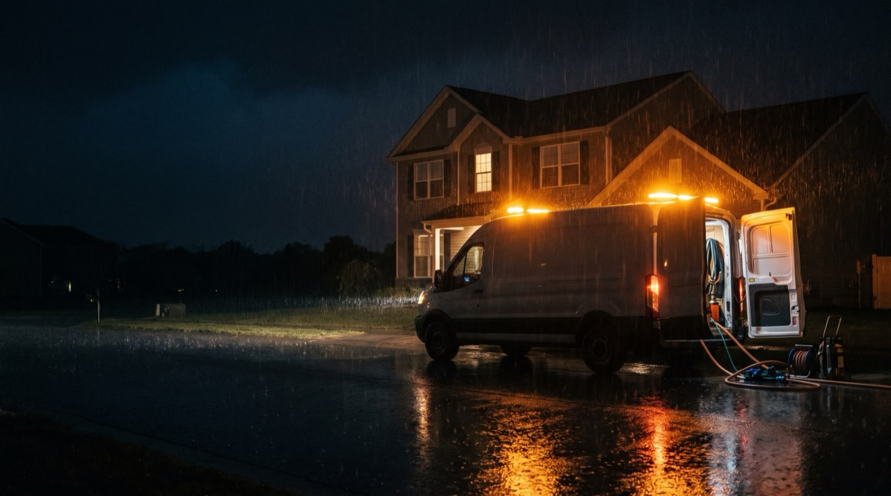
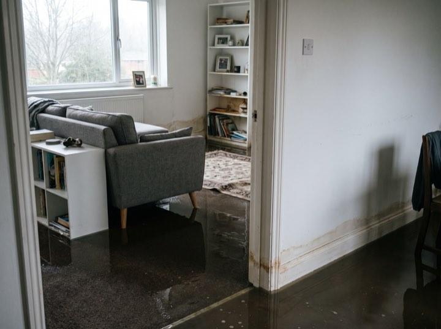
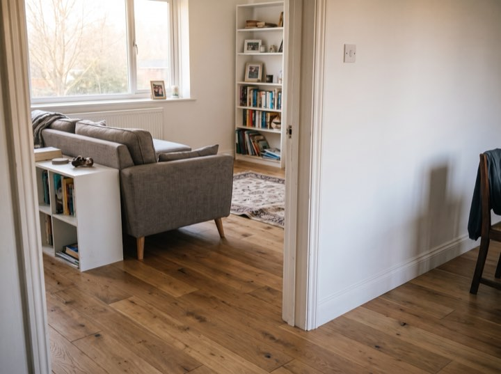
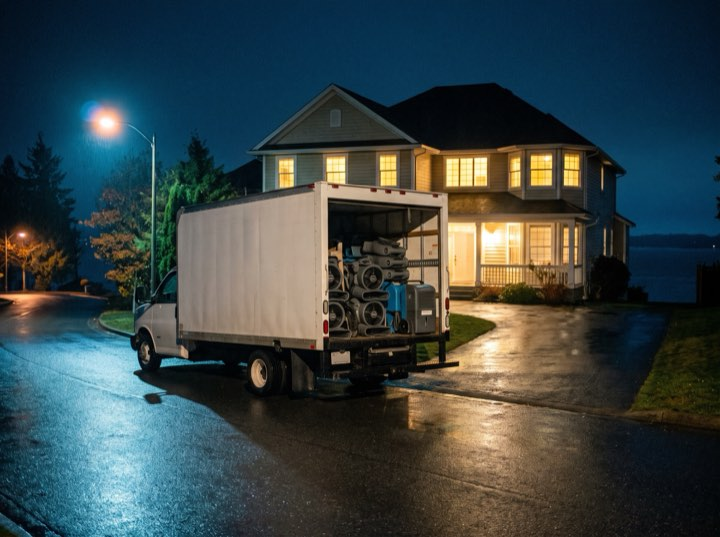
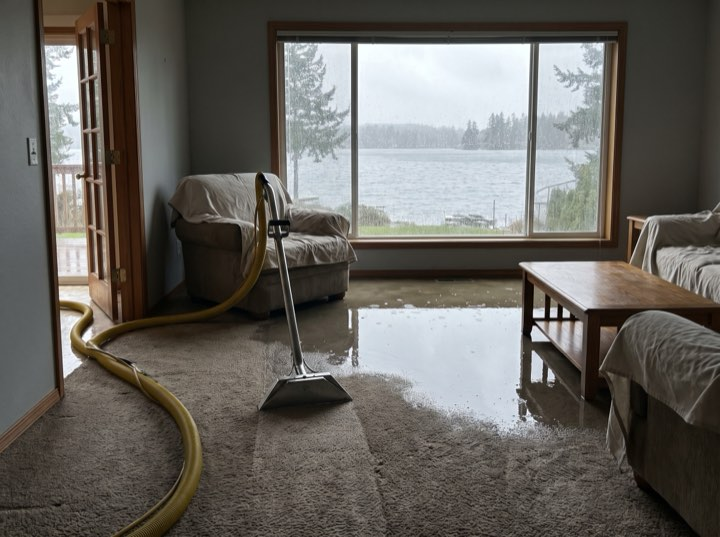
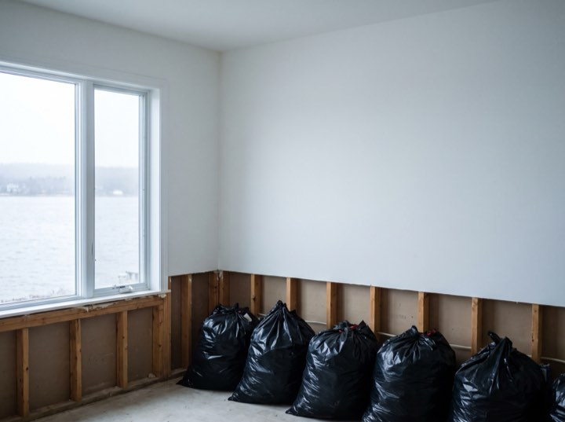

Water · Fire · Mould · 24/7
Emergency water, fire and mould restoration, staffed overnight because that is when pipes fail. Our own people answer the line at any hour, not a call centre taking a message for the morning.

Services
Pipes burst at night and the damage compounds until someone arrives. Which is precisely why the line is staffed at three in the morning.
Truck-mounted extraction, commercial air movers and moisture mapping so we can prove the structure is genuinely dry, not just dry-feeling.
Soot removal, odour neutralisation and contents cleaning. Smoke damage travels far further than the fire itself.
Containment, HEPA filtration and post-remediation verification by an independent hygienist so the clearance means something.
Board-up, tarping and full structural drying. We mobilise extra crews before a forecast storm rather than after it.
Results
“Pipe went at two in the morning. Nightwatch had extraction running before four and dealt with the insurer entirely. I signed two forms in the whole process.”
Gregory N. · Burst supply line, 2,400 sq ft
Certified and approved
Process
You are dealing with a disaster and an insurer at the same time. We take the second one off you.
Our own dispatcher answers, at any hour, and a truck is moving while you are still on the phone.
Stop the source, extract standing water, tarp or board up. The first hours decide the size of the claim.
Full photographic scope and moisture log, submitted to your carrier. We bill them direct and meet the adjuster on site.
Daily readings until verified dry, then reconstruction. You get the log, so nothing is disputed months later.
The night call
A truck at the kerb, water out before dawn, and drying equipment running by the time you have found the insurer's number.





Do not wait for business hours. Every hour standing water sits, the cost and the damage climb. Crews are on call this minute.
We work with all major insurers and bill direct. Free emergency assessment.